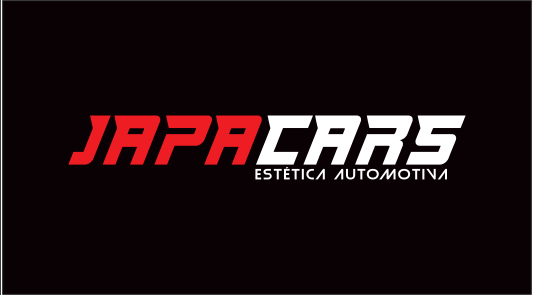

JAPA CARS
ESTÉTICA AUTOMOTIVA
-
POLIMENTO COMERCIAL
Correção parcial das imperfeições (riscos e manchas) da pintura, devolve o brilho do veículo e após o polimento, é aplicado uma proteção na pintura, ajudando a aumentar ainda mais o brilho trazendo hidrorepelência e proteção a pintura
-
POLIMENTO TÉCNICO
Correção total das imperfeições da pintura, serviço que busca a perfeição do nivelamento do verniz
-
HIGIENIZAÇÃO
Limpeza e sanitização da interna do veículo, age direto na remoção de manchas e mau cheiro, alem da limpeza o carro recebe também uma proteção em todas as partes plásticas da parte interna
-
VITRIFICAÇÃO
Vitrificação é uma proteção cerâmica, que se conecta quimicamente direto no verniz do veículo, trazendo uma proteção de até 3 anos, deixando o veículo com um brilho e hidrorepelência maior do que os demais serviços. Para aplicarmos uma vitrificação é necessário executar um polimento técnico, para assim, o vitrificador ter mais eficácia e trazer um resultado realmente surpreendente
-
Sistema leva e Traz